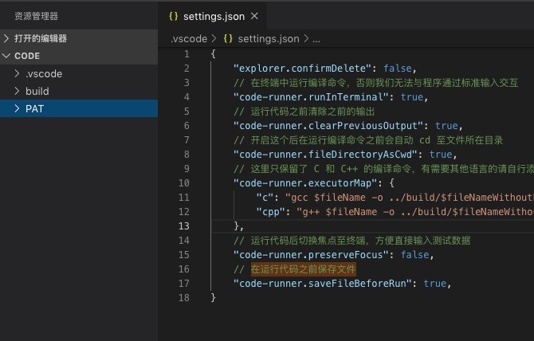
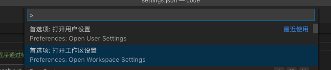

配置C++写程序设计小文件
先下载相关的编译器gcc
修改环境变量文件
export PATH="/usr/local/Cellar/gcc/9.1.0/bin:$PATH"
alias gcc='gcc-9'
alias g++='g++-9'
alias c++='c++-9'
source ~/.bash_profile
|
输入g++ -v查看效果
Using built-in specs.
COLLECT_GCC=g++-9
COLLECT_LTO_WRAPPER=/usr/local/Cellar/gcc/9.2.0_1/libexec/gcc/x86_64-apple-darwin18/9.2.0/lto-wrapper
Target: x86_64-apple-darwin18
Configured with: ../configure --build=x86_64-apple-darwin18 --prefix=/usr/local/Cellar/gcc/9.2.0_1 --libdir=/usr/local/Cellar/gcc/9.2.0_1/lib/gcc/9 --disable-nls --enable-checking=release --enable-languages=c,c++,objc,obj-c++,fortran --program-suffix=-9 --with-gmp=/usr/local/opt/gmp --with-mpfr=/usr/local/opt/mpfr --with-mpc=/usr/local/opt/libmpc --with-isl=/usr/local/opt/isl --with-system-zlib --with-pkgversion='Homebrew GCC 9.2.0_1' --with-bugurl=https://github.com/Homebrew/homebrew-core/issues --disable-multilib --with-native-system-header-dir=/usr/include --with-sysroot=/Library/Developer/CommandLineTools/SDKs/MacOSX.sdk
Thread model: posix
gcc version 9.2.0 (Homebrew GCC 9.2.0_1)
|
VSCode配置
建立一个放代码的根文件夹，这个文件夹只能再往下分一级，要不没法运行代码，原因我在下面标重点
为了不把代码文件和生成文件混在一起，
再建立一个build文件专门存放生成文件
先阐述一下VSCode的层次系统
默认设置（不可修改）-用户设置-工作区设置-文件夹设置
我们这个文件夹是专门用来写程序设计代码的，跑跑小的c++代码，所以我们选择在工作区中设置


把这段代码写进去
{
"explorer.confirmDelete": false,
// 在终端中运行编译命令，否则我们无法与程序通过标准输入交互
"code-runner.runInTerminal": true,
// 运行代码之前清除之前的输出
"code-runner.clearPreviousOutput": true,
// 开启这个后在运行编译命令之前会自动 cd 至文件所在目录
"code-runner.fileDirectoryAsCwd": true,
// 这里只保留了 C 和 C++ 的编译命令，有需要其他语言的请自行添加
"code-runner.executorMap": {
"c": "gcc $fileName -o ../build/$fileNameWithoutExt && ../build/$fileNameWithoutExt",
"cpp": "g++ $fileName -o ../build/$fileNameWithoutExt && ../build/$fileNameWithoutExt",
},
// 运行代码后切换焦点至终端，方便直接输入测试数据
"code-runner.preserveFocus": false,
// 在运行代码之前保存文件
"code-runner.saveFileBeforeRun": true,
}
|
“code-runner.executorMap”: {
“c”: “gcc $fileName -o ../build/$fileNameWithoutExt && ../build/$fileNameWithoutExt”,
“cpp”: “g++ $fileName -o ../build/$fileNameWithoutExt && ../build/$fileNameWithoutExt”,
},
运行执行链接是有要求的
所以只能在code中建立一个文件夹来写